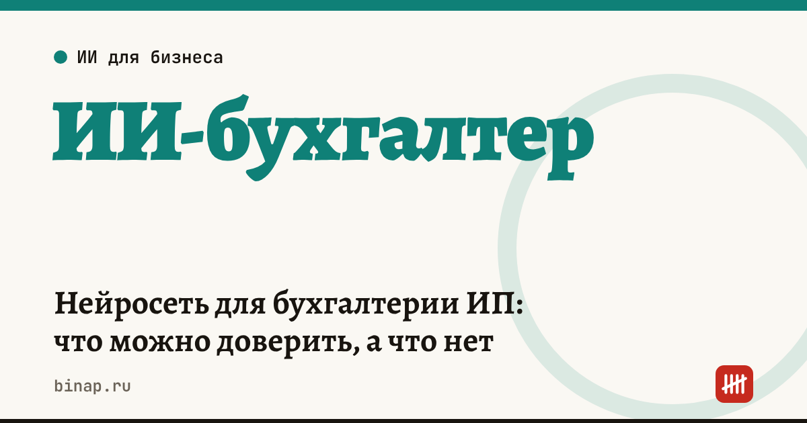

Нейросеть для бухгалтерии ИП: что можно доверить, а что нет

Нейросеть хорошо справляется с рутиной вокруг учёта: сверить выписку с книгой доходов, разложить операции по видам, найти расхождения в акте сверки, написать письмо контрагенту, составить календарь сроков. Но она не отвечает за налог: ставку, базу, право на вычет и решение «платить или нет» проверяет человек — вы или бухгалтер. Ниже — что можно отдать нейросети, что нельзя и готовые запросы.
Коротко
- Нейросети можно доверить черновую работу: сверку, сортировку, поиск расхождений, письма и списки дел.
- Нельзя доверять расчёт налога «на слово», выбор режима, ответы на требования ФНС и всё, где нужна подпись.
- Нейросеть может уверенно ошибаться в ставках, сроках и нормах — каждую цифру сверяйте с источником.
- Не отправляйте в открытые сервисы паспортные данные, ИНН физлиц, номера карт, пароли и токены банка.
- Начните с одной задачи и сравните время с ручной работой.
Сроки, изменения и разборы для ИП и самозанятых — каждое утро в Telegram и MAX. Подпишитесь, чтобы не пропустить.
Что можно доверить, а что нет
| Задача | Нейросеть | Почему |
|---|---|---|
| Сверка выписки банка с КУДиР | да, с проверкой | сравнение двух таблиц — её сильная сторона |
| Разнесение операций: доход, возврат, перевод себе | да, с проверкой | по назначению платежа она часто угадывает верно |
| Поиск расхождений в акте сверки | да | находит строки, которых нет в одной из таблиц |
| Письмо контрагенту о расхождении | да | черновик за минуту |
| Календарь сроков на квартал | черновик | сроки сверяйте с календарём ФНС |
| Расчёт налога и взносов | только как проверка | считайте в калькуляторе или сервисе, а нейросеть пусть найдёт ошибку |
| Выбор режима и объекта УСН | нет | нужен расчёт на ваших цифрах и актуальные нормы |
| Ответ на требование или письмо ФНС | нет | ответственность и сроки — на вас |
Запросы
Сверка выписки с книгой доходов.
Ты — бухгалтер ИП на УСН. Вот две таблицы. Таблица 1 — поступления по выписке банка за [период]: [дата | сумма | назначение платежа]. Таблица 2 — доходы в книге учёта: [дата | сумма | документ]. Найди поступления, которых нет в книге, и записи книги, которых нет в выписке. Отдельно отметь поступления, которые похожи на возврат, перевод между своими счетами или заём, — их обычно не включают в доходы. Ничего не придумывай: если не хватает данных, так и напиши.
Календарь сроков.
Составь список платежей и отчётов ИП на УСН «доходы» без сотрудников на [квартал и год]: что, до какой даты, куда. Для каждой строки укажи, на какую статью Налогового кодекса или страницу ФНС опираешься. Если не уверен в дате, напиши «проверить».
Колонка «на что опираешься» нужна, чтобы быстро проверить каждую строку, а не верить на слово. Сроки взносов и налога для ИП на УСН собраны в статье сколько платит ИП на УСН 6%.
Как проверять результат
- Суммы. Итог по таблице нейросети должен совпасть с итогом по выписке.
- Каждая «находка». Откройте первичку: счёт, акт, чек.
- Нормы и сроки. Сверьте с Налоговым кодексом или сайтом ФНС — нейросеть может опираться на устаревшие правила.
- Решение. Что включать в доходы и что платить, решаете вы или бухгалтер.
Что не отправлять в нейросеть
Паспортные данные, ИНН и СНИЛС физлиц, номера карт, пароли, коды и токены от банка, сведения о сотрудниках. Перед загрузкой выписки удалите имена физлиц из назначений платежей или замените их на «Клиент 1, Клиент 2». Подробно — в статье ИИ и персональные данные.
Пример: сколько времени экономит сверка
Расчёт редакции, цифры условные. ИП получает 120 поступлений в месяц. Ручная сверка выписки с книгой занимает около 2 часов, с нейросетью — 20 минут на подготовку таблиц и проверку найденных строк. Экономия — примерно 1,5 часа в месяц, 18 часов в год. Ошибки всё равно ищете вы, но уже по короткому списку, а не по всей выписке.
Что сделать сейчас
- Выберите одну задачу — сверку выписки с книгой учёта за прошлый месяц.
- Уберите из выписки персональные данные физлиц.
- Дайте нейросети запрос выше и проверьте каждую найденную строку.
- Решите, что оставить себе, а что отдать бухгалтеру: разбор в статье нужен ли бухгалтер ИП на УСН.
Частые вопросы
Можно ли сдавать отчётность, которую подготовила нейросеть? Только после проверки человеком. За ошибки в декларации отвечает налогоплательщик, а не сервис.
Какую нейросеть выбрать для учёта? Ту, где вы можете не передавать персональные данные и где понятно, как хранятся ваши запросы. Возможности и цены смотрите на официальных страницах сервисов.
Заменит ли нейросеть бухгалтера? Нет. Она ускоряет черновую работу, но не отвечает за результат и не знает всех особенностей вашего бизнеса.